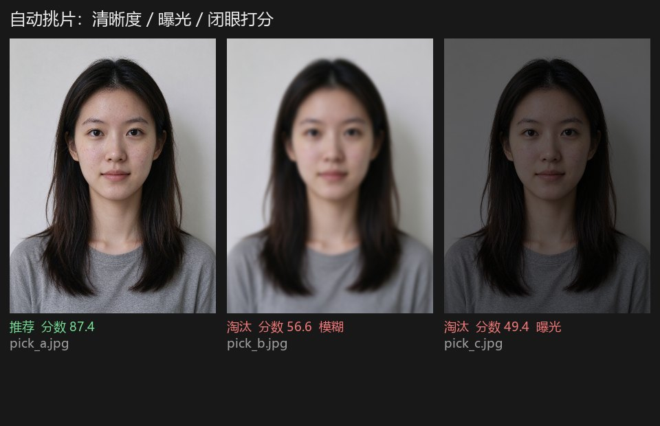
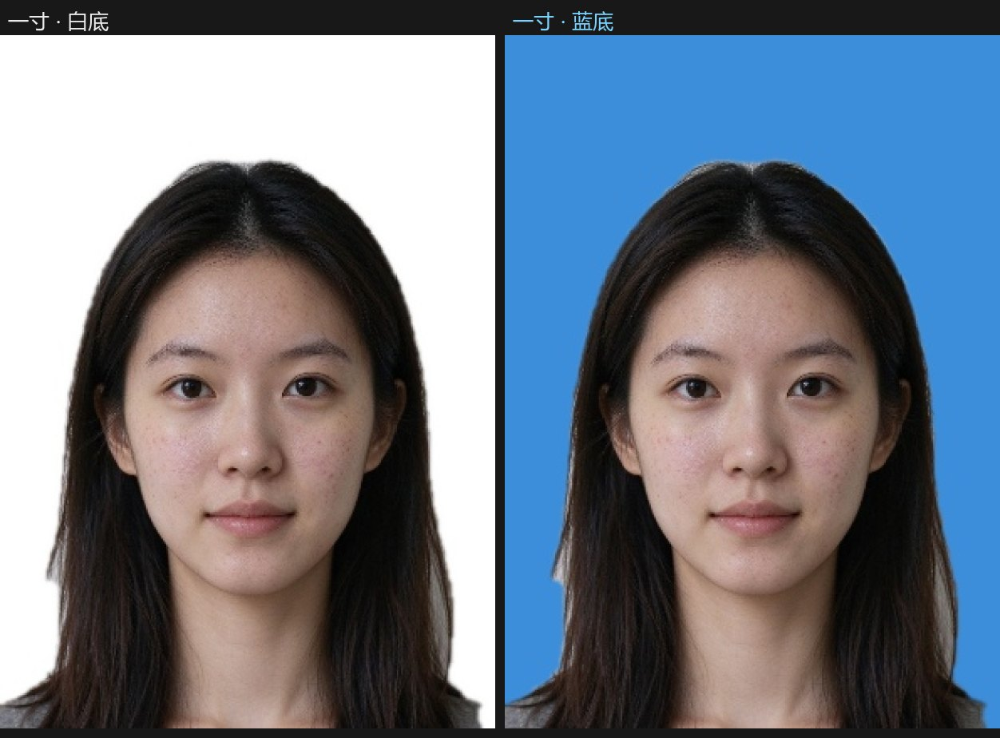
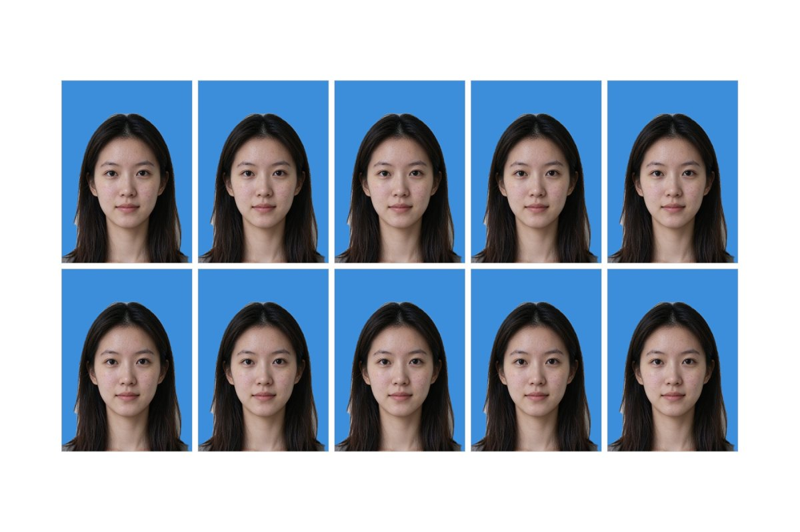

文件 0 项▼
加文件夹
加照片
移除
清空
还没有添加照片
滤镜▼
输出与批处理▼
重名策略
命名模板
占位符：{name} {seq} {date} {time} {folder}
导出线程并发数量
预设
 8bit 抖动
8bit 抖动辅助工具▼

自动挑片 配色提取
配色提取 参考图→LUT
参考图→LUT🖼
添加照片后这里显示对比预览
直方图▼
RGB 直方图
曝光直方图
阴影中间调高光
LUT 参数▼
未选择 LUT
胶片质感
 LUT 套用
LUT 套用 胶片质感
胶片质感色彩调整▼
AI 增强（超分 / 景深）
 色彩调整
色彩调整 清晰度
清晰度 超分 2×
超分 2× 景深
景深美颜▼
口红色号
可选：GFPGAN v1.4 细节修复（在美颜之后叠加）
 美颜
美颜 液化
液化证件照▼
尺寸
底色
相纸
自动裁脸对齐 + 换底；预览即按导出规格渲染

换底色
相纸排版移轴效果▼
 移轴
移轴